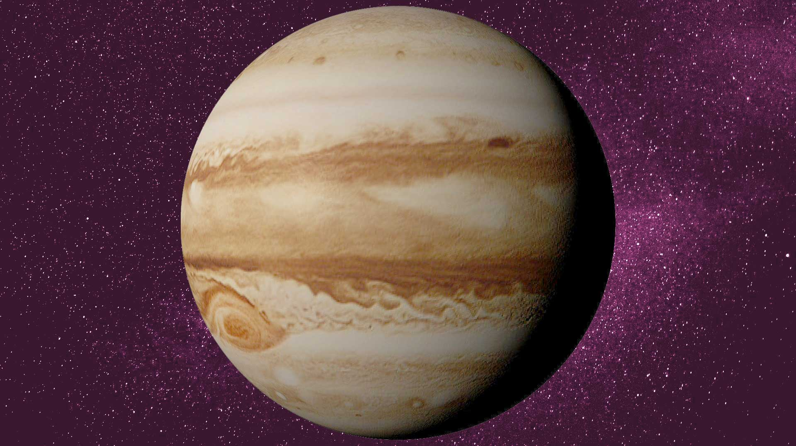

Mercury
| 평균 반지름 |
공전 주기 |
지구와의 거리 |
| 2,439.7km |
88일 |
91,700,000km |
Venus
| 평균 반지름 |
공전 주기 |
지구와의 거리 |
| 6,051.8km |
116일 18시간 |
41,890,000km |
Earth
| 평균 반지름 |
공전 주기 |
지구와의 거리 |
| 6,371.9km |
365일 |
- |
Moon
| 평균 반지름 |
공전 주기 |
지구와의 거리 |
| 1,737.4km |
27일 |
77,790,000km |
Mars
| 평균 반지름 |
공전 주기 |
지구와의 거리 |
| 3,389.5km |
687일 |
385,000km |

Jupiter
| 평균 반지름 |
공전 주기 |
지구와의 거리 |
| 69,911km |
12년 |
628,320,000km |
Saturn
| 평균 반지름 |
공전 주기 |
지구와의 거리 |
| 58,232km |
29년 |
1,280,580,000km |
Uranus
| 평균 반지름 |
공전 주기 |
지구와의 거리 |
| 25,362km |
84년 |
2,719,730,000km |
Neptune
| 평균 반지름 |
공전주기 |
지구와의 거리 |
| 24,622km |
165년 |
4,357,850,000km |